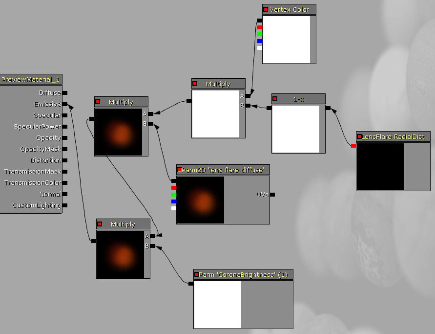

UDN
Search public documentation:
LensFlareEditorUserGuide
日本語訳
中国翻译
한국어
Interested in the Unreal Engine?
Visit the Unreal Technology site.
Looking for jobs and company info?
Check out the Epic games site.
Questions about support via UDN?
Contact the UDN Staff
中国翻译
한국어
Interested in the Unreal Engine?
Visit the Unreal Technology site.
Looking for jobs and company info?
Check out the Epic games site.
Questions about support via UDN?
Contact the UDN Staff
UE3 Home > Particle & Effects > Lens Flares > Lens Flare Editor User Guide
UE3 Home > FX Artist > Lens Flare Editor User Guide
UE3 Home > FX Artist > Lens Flare Editor User Guide
Lens Flare Editor User Guide
Lens Flare Editor User Guide
Overview
Creating a Lens Flare
LFMaterials array under the SourceElement dropdown menu. Note that the source will always draw in the world depth priority group.
For something as simple as the sun by itself, you could stop here; but if you want additional elements, right-click in the upper right view of the lens flare editor and select 'Add Element <Before/After>' to add reflection elements.
When you add reflections, they will all be stacked in the same space by default, which will give you no parallax as your view of the lens flare changes. To separate the reflections to give the effect depth, you want to increase the RayDistance value of the reflection. This value is in the property rollout of the reflection element, along with all the other values.
Just like the Source element, there is a LFMaterials slot to plug a material for the reflection into. Here you can scale, rotate, and recolor the material of the reflections or the source right within the editor. These would be the AxisScaling, Rotation, and Color properties respectively.
It's best to test the lens flare in the actual location where it will be used in-game so that you can get a better feel for what values should be used when tweaking properties such as the reflection raydistance.

Lens Flare Editor Layout
Context Menu
Right-clicking in the editor opens up a context menu:Working with Lens Flares
| DistMap_Scale |
| DistMap_Color |
| DistMap_Alpha |
Standard Lens Flares
Lens Flares use special parameters passed back in from the material editor in order to performm custom functions related directly to Lens Flares. Here is a breakdown of the material nodes and their uses: LensFlareRadialDist This node is similar to a dot product, it gets brighter as the camera directly faces the lens flare and darker as the lens flare approaches the edge of the screen (0-1). Modify output as needed. This allows your lens flare elements to fall off or change value as the reach the edges of the screen. LensFlareOcclusion Returns a value that approximates how occluded the lens flare is. This calculation is based off of the bounding box of the Lens Flare (right click in the main window of the Lens Flare editor and choose 'Select Lens Flare' to select the base properties of the flare to access the bounding box size settings) and scales properly based on distance, so that your values make sense from all distances. A larger bounding box means that more of the flare must be occluded. This result interacts with the Lens Flare parameter called ScreenPercentageMap. The ScreenPercentageMap is a curve which maps the falloff as it related to the occlusion amount. This allows you to make a light source that stays bright when only a small portion is occluded or one that dims greatly if even a small portion is occluded. Generally you want this to be a fairly linear ramp so the flare gets dim gradually based on occlusion. Vertex Color Similar to our other particles, Vertex Color is passed into each lens flare element from the material editor. This allows you to change your color and alpha values directly in the LF editor using the Color and Alpha parameters set in each source and element in the lens flare actor. Radius The Radius field applies to any lens flare and sets a radius around it, outside of which the flare is not visible. (This is similar to point and spot lights.)Directional Lens Flares
If you have a lens flare that uses a cone (like a flashlight corona or car headlight), then the flare is considered to be directional. To set a cone, right click in the main LF editor window and choose "Select Lens Flare". This selects the base properties of the Lens Flare actor and allows you to set a Min and Max falloff cone (like the light settings in UE3) as well as a radius which controls distance. You will then see the radius indicated in the editor if you have your LF placed in the world and it is selected. LensFlareIntensity For Directional Lens Flares, multiplying this parameter in allows the flare to fall off based on the view angle from the cone. This causes a nice smooth dropoff in intensity as the flare starts to point away from the camera. These two function identically to the way a spot light works w.r.t. settings:- OuterCone
- the outer cone of a directional lens flare.
- InnerCone
- the inner cone of a direction lens flare.